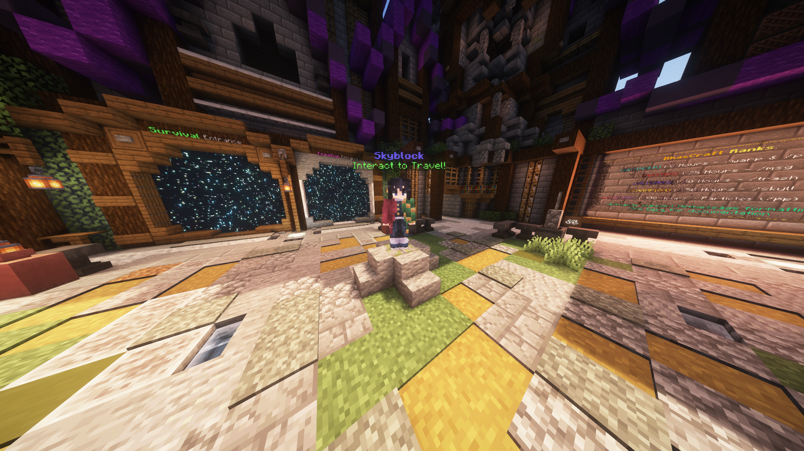
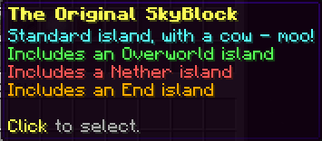
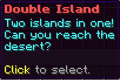
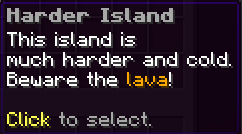
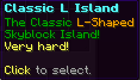

Skyblock
Getting There
To get to Skyblock, punch the NPC in the Hub:

Or run the command /island (or /is).
How It Works
Skyblock is the classic skyblock experience — you start on an island of your choice and build outwards, gathering materials as you go.
When you first start, you will see a chest UI showing the four islands you can choose from:




Once your island has been created, you will be teleported to it and can begin!
Commands
💡 TipYou can use
/is instead of /island for any of these commands.Island Management
/islandDisplays the main island help menu or interface.
/island goTeleports you straight to your island home.
/island sethome [name]Sets your island home teleport point at your current position.
/island homesLists all island home teleport locations you have set.
/island deletehome [name]Deletes a specific home teleport point.
/island resetDeletes your current island entirely so you can start fresh.
/island infoDisplays detailed information about your island or another player's island.
/island nearShows the names of neighbouring islands around your location.
/island spawnTeleports you back to the SkyBlock world's spawn point.
Team Management
/island teamOpens the team management menu.
/island team invite [player]Invites a player to join your island team.
/island team acceptAccepts a pending invitation to join an island team.
/island team rejectRejects a pending island team invitation.
/island team leaveLeaves your current island team.
/island team kick [player]Removes a member from your island team.
/island team trust [player]Gives a player permanent building access without adding them to the team.
/island team untrust [player]Revokes permanent trusted status from a player.
/island team coop [player]Gives an online player temporary building access to your island.
/island team uncoop [player]Revokes temporary co-op status from a player.
/island team promote [player]Promotes a team member up a rank on your island.
/island team demote [player]Demotes a team member down a rank on your island.
/island team setowner [player]Transfers ownership of the island to another team member.
Social & Security
/island ban [player]Bans a player from entering your island.
/island unban [player]Lifts an island ban, allowing the player to visit again.
/island banlistLists all players currently banned from your island.